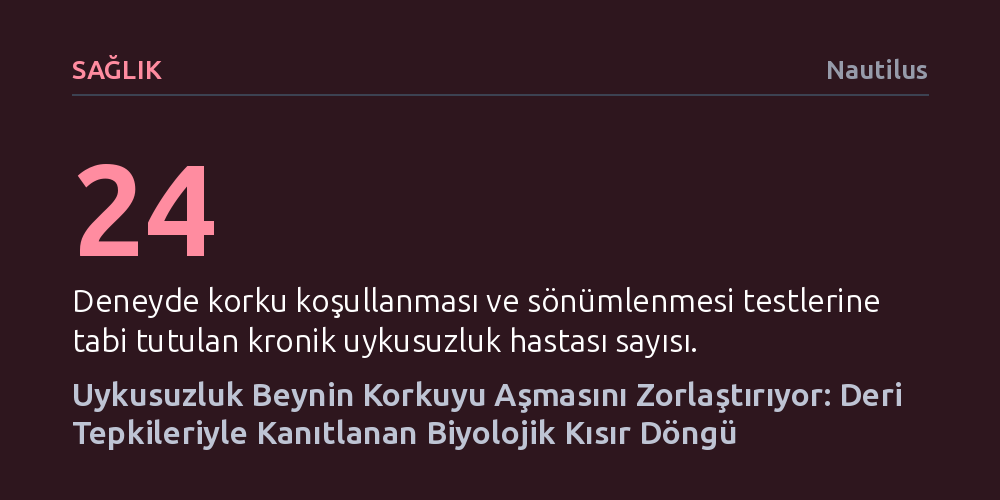

SAGLIK · Nautilus · 2026-10-17
Yeni bir araştırma, uykusuzluk çeken bireylerin tehlike hissi geçtikten sonra bile biyolojik olarak aşırı uyarılmış kaldığını ve korkuyu sönümlemekte zorlandığını gösterdi. Deri iletkenliği verilerine dayanan yeni istatistiksel modeller, uykusuzluğun korku ve anksiyete bozukluklarını nasıl kronikleştirdiğini somutlaştırıyor.
Uykusuzluğun yalnızca bir yorgunluk hali olmadığını, beynin tehdit algısını yatıştırma yetisini bozarak kaygıyı kronikleştiren biyolojik bir engel oluşturduğunu gösterir.

Korku ile uyku arasındaki bağ iki yönlü ve yıpratıcı bir kısır döngüye dayanıyor. Kronik uykusuzluk yaşayan bireylerde sinir sisteminin "savaş ya da kaç" mekanizması, ortamda somut hiçbir tehdit bulunmadığında dahi arka planda kesintisiz çalışmayı sürdürüyor. Bu durum kişiyi sürekli bir aşırı uyarılmışlık içinde tutarken, uykusuzluk da korku ve anksiyete bozukluklarının gelişme riskini belirgin biçimde artırıyor.
Beyin, güvenli hale gelen durumlara karşı korku tepkisini baskılamak için "korku sönümlenmesi" adı verilen bir süreç yürütür. Bu süreçte zihin, eski korku hafızasını tamamen silmek yerine onun üzerine ket vurucu yeni bir güvenlik belleği inşa eder; yani uyararanın artık bir tehdit taşımadığını öğrenir. Ancak duygusal dengenin korunması ve öğrenilenlerin pekiştirilmesi sağlıklı uykuya bağlı olduğundan, uykusuzluk bu onarıcı mekanizmanın işleyişini doğrudan sekteye uğratıyor.
Araştırmacılar uykusuzluğun korku öğrenimi ve sönümlenmesi üzerindeki etkisini somutlaştırmak için 24 uykusuzluk hastası ile 24 sağlıklı uyuyanı klasik bir korku koşullanması sürecine tabi tuttu. Katılımcılara belirli renkli görseller gösterilirken aynı anda hafif elektrik şokları verildi ve böylece görsel ile tehdit arasında zihinsel bir bağ kurulması sağlandı. Ardından aynı görseller şok verilmeden tekrar gösterilerek katılımcıların ortamın artık güvenli olduğunu kavramaları, yani korkuyu sönümlemeleri hedeflendi.
Deney boyunca katılımcıların derisindeki elektriksel iletkenlik hassas biçimde kaydedildi. Ter bezlerindeki mikroskobik dalgalanmaları doğrudan izleyen bu yöntem, vücudun otonom stres ve uyarılma tepkisini yansıtır. Ölçümler, uykusuzluk çekenlerin hem koşullanmaya daha güçlü tepki verdiğini hem de şok kesildiğinde korku tepkisini yatıştırmakta ve güvenlik hissini öğrenmekte belirgin şekilde zorlandığını gösterdi.
PLOS Mental Health dergisinde yayımlanan yeni çalışmada araştırmacılar, önceki deneyden elde edilen verileri daha gelişmiş istatistiksel modellerle yeniden ele aldı. Geliştirilen modellerden biri stresi yalnızca derideki anlık tepki sıçramaları üzerinden hesaplarken, diğeri uykusuzluk hastalarında sürekli devrede olan arka plan uyarılmışlık düzeyini de denkleme kattı. Bu sayede hastaların anlık tehdit tepkileri ile kronik gerginlik zeminleri birbirinden bağımsız olarak ayrıştırılabildi.
Bu modelleme, maruz bırakma terapisi gibi klinik yaklaşımların uykusuzluk çeken hastalarda neden sıklıkla yetersiz kaldığını açıklığa kavuşturuyor. Hastanın zeminindeki kronik aşırı uyarılmışlık hesaba katılmadığında veya uykusuzluk tedavi edilmediğinde, beynin güvenlik sinyallerini kalıcı olarak işlemesi zorlaşıyor. Dolayısıyla kaygı ve korku bozukluklarıyla mücadelede uykuyu iyileştirmenin birincil öncelik olması gerektiği sayısal verilerle ortaya konuyor.